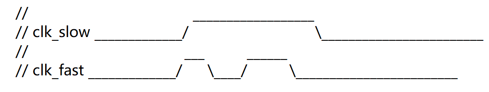

A good coding style helps with code reading, debugging, and modification. Although Verilog code can be written arbitrarily as long as the syntax is correct, a sloppy coding style is often a one-shot deal. Sometimes when you look back at your own code, you can neither see the meaning of the signals nor understand the functionality of the modules, and you have to analyze the logic step by step. This consumes a lot of time and energy to digest, seriously affecting the design progress.
To prevent others or ourselves from sincerely exclaiming: "Which little silly baby wrote this darn code!" The following are some suggestions on coding style.
About Naming
Signal variables, modules, etc. must use meaningful names, and signal names should remain unchanged when passing between modules, so that the code itself carries clear descriptive information and enhanced readability.
When a name contains too many words, you can concatenate them using capital initial letters or underscores "_". I personally prefer the latter because it is clearer.
reg data_to_destination_clock ; // Recommended
It is recommended to use word abbreviations to name signals, and know what to keep or discard to avoid overly long signal names. For example, clock is abbreviated as clk, destination as dest, source as src, etc.
reg data_to_destination_clock ; reg des_data ; // RecommendedCleverly use numbers to represent English letters. For example, 2 represents "to" and 4 represents "for", which can save a tiny bit of code space.
reg clk_for_test, sig_uart_to_spi ; reg clk4test, sig_uart2spi ; //推荐
Although Verilog is case-sensitive, it is recommended to use all lowercase for general functional module names, ports, signal variables, etc., use uppercase for parameters, and use uppercase for some special ports such as power and pad. This is just for coding convenience, making it easy to distinguish constants from variables, and avoiding the difference between signal variables that have the same name but different cases.
parameter DW = 8 ; //常量 reg [DW-1 : 0] wdata ; //变量
Register variables generally add a suffix_r, variables delayed by clock cycles add a suffix_r1、_r2etc. There are two main benefits. First, during RTL design, data can be easily operated on according to the variable type. Second, signal names in the post-synthesis netlist often change; adding suffixes makes it easy to find the corresponding signal variables in the post-synthesis netlist that match those in the RTL.
wire dout_en ; reg dout_en_r ; ... //dout_en_r 的逻辑 assign dout_en = dout_en_r ;
Other suffixes:_dCan indicate a delayed signal,_tCan indicate a temporarily stored signal,_nCan indicate an active-low signal,_sCan indicate a slave signal,_mCan indicate a master signal, etc.
Avoid using keywords to name signals, for examplein, out, x, zare not recommended as variables.
File names should remain consistent with the design'smodulename, and try to include only one design module per file.
About Comments
Every design module should begin with file description information, including copyright, module name, author, date, summary, modification history, etc. For example:
/********************************************************** // Copyright 1891.06.02-2017.07.14 // Contact with willrious@sina.com ================ runoob.v ====================== >> Author : willrious >> Date : 1995.09.07 >> Description : Welcome >> note : (1)To >> : (2)My >> V180121 : World. ************************************************************/
Comments should concisely express the meaning described by the code. Short comments are added after a single line of code, while long comments should be written one line ahead.
//输出位宽小于输入位宽，求取缩小的倍数及对应的位数 parameter SHRINK = DWI/DWO ; reg [AWI-1:0] ADDR_WR ; //写地址
Comments should be written in English as much as possible to ensure they display correctly on different operating systems and editors.
Among port signals, except for common clock and reset signals, it is best to comment on other signals as well.
Comments are very powerful. You can use comment information to draw timing diagrams, and even use comments to draw digital circuit structure diagrams.


About Optimization
Use parentheses to determine the priority or logical structure of the program. To avoid design errors caused by operator precedence issues, it is recommended to use parentheses frequently. At the same time, clever use of parentheses can sometimes optimize the structure after logic synthesis. For example:
assign F = A + B + C + D ;
// often synthesized into 2 parallel adders and 1 cascade adder, with more relaxed timing
assign F = (A + B) + (C + D) ;
// Not recommended
assign flag = cnt == 4'd2 && mode == 2'b01;
// Recommended
assign flag = (cnt == 4'd2) && (mode == 2'b01);
For conditional statements, try to use case statements instead of if statements. When there are too many conditional judgment statements at the same level, the hardware structure synthesized from case statements often consumes fewer resources and has better timing than that from if statements.
When writing state machines, try to use the 3-segment style to ensure the code is neat and safe.
When designing a system, try to adopt the method of splitting modules by function and then instantiating modules. Compared with integrating thousands of lines of code into one file, module splitting is beneficial for team design and easy to update and maintain.
About Neatness
Ensure one signal per line for port signals, with the comma immediately after the port declaration. Those with OCD, please keep the commas aligned too.
module even_divisor (input rstn, clk, output clk_div2, clk_div4, clk_div10) ;
// Recommended
module even_divisor (
input rstn ,
input clk ,
output clk_div2 ,
output clk_div4 ,
output clk_div10
);
When a line of code is too long, try to wrap it to a new line without using a line continuation character, for example:
assign rempty = (rover_flag == rq2_wptr_decode[AWI]) &&
(raddr_ex >= rq2_wptr_decode[AWI-1:0]);
Try to use begin + end to ensure the cascade relationship between execution statements. begin should be on the same line as the keyword, and end should be on a new line. For example, when using an always block, or when a conditional statement has only one execution statement, the begin + end keywords can be omitted. However, to ensure structural integrity and facilitate future debugging and modification, it is recommended to add such keywords.
if (!rstn) begin
dout_en_r <= 1'b0 ;
end
else begin
dout_en_r <= rd_en_wir ;
end
end
Try to use the Tab key and spaces to ensure statements are aligned according to the hierarchical structure. There should also be spaces between variables, keywords, and operators for easier logic judgment.
if (DWO >= DWI) begin
reg [DWI-1:0] mem [(1<<AWI)-1 : 0] ;
always @(posedge CLK_WR) begin
if (WR_EN) begin
mem[ADDR_WR] <= D ;
end
end
end
endgenerate
When instantiating modules, try to separate port signals from connection signals and align them respectively. When the connection signal is a vector, indicate its bit width for easy reading and debugging.
.CLK_WR (clk),
.WR_EN (wren), // Do not write when full
.ADDR_WR (addr),
.D (wdata[9:0]),
.Q (rdata[31:0])
);
When instantiating multiple identical modules, try to use generate statements to avoid overly long instantiation code descriptions.